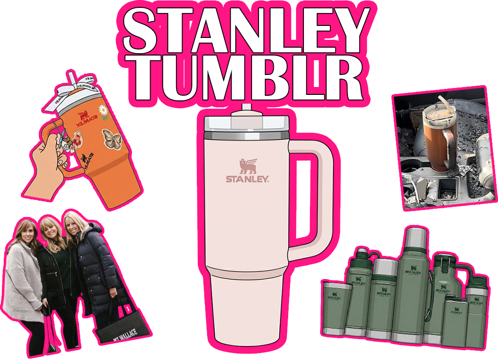

최근 미국에서는 Stanley 텀블러가 엄청난 인기를 끌고 있다. 원래 약 40달러였던 제품이 리셀 시장에서는 10배가 넘는 가격으로 거래되었고, 한정판 제품은 수십만 원대까지 가격이 올라갔다. 미국에서는
스탠리 텀블러를 들고 다니는 사람을 쉽게 볼 수 있을 정도로 큰 유행이 되었다.
스탠리 브랜드는 1913년에 시작된 오래된 브랜드로, 원래는 튼튼한 보온병을 만드는 회사였다. 과거에는 건설 노동자나 군인 등 주로 남성 소비자를 대상으로 제품을 판매했으며, 실제로 2차 세계대전 당시
미군에게 보급되기도 했다. 하지만 시대가 변하면서 브랜드 인기는 점차 줄어들었다.
전환점은 대표 제품인 ‘퀸처(Quencher)’였다. 한때 단종 위기까지 갔지만, 워킹맘들 사이에서
큰 인기를 얻으며 다시 주목받게 되었다. 이후 인플루언서들의 SNS 홍보와 입소문이 이어졌고, 스탠리는 여성 소비자를 겨냥해 파스텔톤 색상의 제품들을 출시하기 시작했다.
특히 화재가 난 자동차 안에서도 얼음이 녹지 않은 채 발견된 스탠리 텀블러 영상은 SNS에서 엄청난
화제를 모았다. 이 영상은 수억 회 이상의 조회수를 기록하며 스탠리의 뛰어난 성능을 알렸고,
브랜드 인기를 폭발적으로 끌어올렸다.
현재는 텀블러를 단순한 생활용품이 아니라 패션 아이템처럼 소비하는 문화가 형성되었고, 여러 개를
수집하는 사람들도 많아졌다. 또한 유명 연예인과의 협업 제품이나 한정판 제품은 높은 인기를 얻고
있으며, 유명인을 따라 소비하는 ‘모방 소비’ 현상 역시 유행에 큰 영향을 미치고 있다.